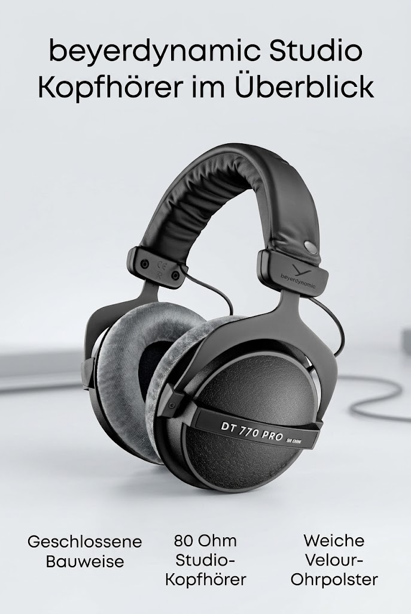

Übersicht / Studio Kopfhörer
beyerdynamic

Werbung. Diese Seite enthält Partnerlinks: Als Amazon-Partner verdiene ich an qualifizierten Käufen. Für dich ändert sich nichts am Preis. Preise und Verfügbarkeit stehen bei Amazon und ändern sich laufend.